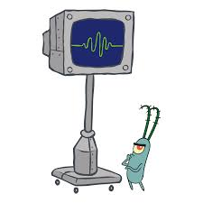

Rol
Plankton vive en una ciudad submarina llamada
Fondo de bikini. Junto con su esposa, Karen,
manejan un local de comida rápida llamado
Chum Bucket. El mismo se encuentra frente al
exitoso Crustáceo Cascarudo, el cual es manejado por
el Sr. Cangrejo y sus empleados Calamardo y Bob Esponja.
La envidia y las ganas de que su negocio triunfe
lo llevan a obsesionarse con la adquisición de la
fórmula secreta de la cangreburguer, producto
vendido en el Crustáceo Cascarudo. El piensa
que al obtenerla sus problemas se solucionaran y
podrá así tener sus primeros clientes y será
amado. Pasa sus días elaborando planes y estrategias para robarla,
creciendo así su odio por el Sr. Cangrejo y su extremadamente fiel
y explotado empleado, Bob.
Referencia

Plankton es un personaje secundario de la película
“Bob Esponja: la película” (2004 ‧ Animación/Comedia ‧ 1h 27m)
donde desarrolla su rol de villano que complota contra Bob Esponja
y Don Cangrejo.
Personalidad
Gruñón y malhumorado, no
contesta de manera cordial ni
intenta agradarle a la gente, a
menos que haya algo en juego
a su favor. Desprecia a todos y
es muy irascible.
Inteligente pero debido a su
pequeño tamaño la vida resulta mucho más
complicada de
lo que es, esto lo hace frustrado y también le da un complejo
de hombre pequeño.
En esencia, malvado. Constantemente egocéntrico,
pero por momentos se
muestra sensible y pasional.
Muy decidido y determinante con sus objetivos, es
resiliente y no se da por
vencido tan fácil, siempre
tiene nuevas ideas para
concretar su prometido.
Esto lo refleja como altamente creativo y manipulador.

Aspecto
Plankton tiene el tamaño de una nuez, posee dos antenas parecidas a las de una cucaracha, y un solo ojo centrado en su rostro, como un cíclope. Sus patitas pequeñas y bracitos no le impiden realizar tareas, solo que en escala reducida. Va desnudo aunque por momentos se viste de temáticas, ya sea para ejecutar alguno de sus planes o simplemente después de tomar una ducha en bata. Es muy expresivo gesticularmente, su ojo suele delatar su estado de ánimo, acompañado por su boca con dientes separados. Su única ceja también ayuda a darle profundidad a sus expresiones, su pupila roja toma formas según su humor.